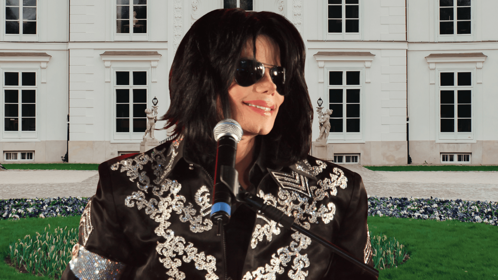

Explora su legado
Conoce sus récords, premios y la influencia que dejó en la música global.
Ver logros →Michael Jackson transformó la música, el baile y la cultura visual moderna. Su impacto sigue vivo en cada escenario, videoclip y artista que sueña en grande.
Nació el 29 de agosto de 1958 en Gary, Indiana. Desde The Jackson 5 hasta su carrera solista, elevó el estándar del pop mundial con creatividad, disciplina y una identidad artística única.

Conoce sus récords, premios y la influencia que dejó en la música global.
Ver logros →Disfruta curiosidades, contenido icónico y celebra su música con otros fans.
Ir a la fan zone →